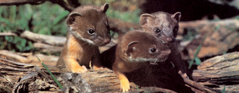
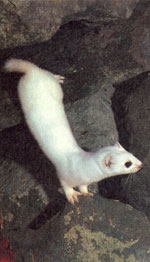
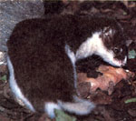
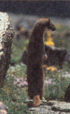
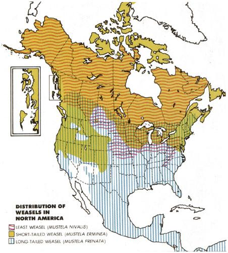

In search of the original better mousetrap.
The seemingly innocuous little creature we call the weasel is an insatiable killer driven to murderous frenzy by a large parasite residing in its stomach. It sucks the blood of its victims, conceives through its mouth and gives birth through an ear, can squeeze itself through a wedding ring, and magically changes from brown to white within hours of the first snowfall each winter.
In my research I've run across each of those beliefs concerning the weasel-some several times-recorded as myth, legend, or scientific fact. Of course, there's not a word of truth to any of them . . . but lack of truth has seldom stopped people from believing what they will about the mysteries of life. And, because of its furtiveness, the weasel is a mystery.
That's why such a small creature holds such great interest for me. Even though two of the three North American weasel species live literally just beyond my door, the secretive little buggers continually frustrate my efforts to observe them in the wild for more than a few seconds at a time.
Others have better luck. The trick to weasel watching, a photographer friend tells me, is finding the rascals on their home turf. Near their dens, he says, they're not the least bit shy-so long as you do nothing to startle them. Once, my friend reports, an entire family of the little squirts approached to within just a few yards and cavorted for his camera.
I guess I've always been in the right places at the wrong times and the wrong places the rest of the time. Or maybe I'm just weasel jinxed. But I'll keep at it. And between treks to the woods, I'll keep learning what I can from more successful weasel watchers.
Weasels belong to the family of carnivores known to biologists as Mustelidae-a tax onomic moniker that translates crudely to "mouse stealers" and includes 64 species worldwide. North America's mustelids include weasels, badgers, skunks, otters, minks, wolverines, fishers, martens, and the critically endangered black-footed ferret. The smallest of the lot is the least weasel (imagine a svelte chipmunk), the largest is the sea otter (up to six feet tongue to tail), and the most powerful is the wolverine.
All mustelids have highly developed anal scent glands, from which they can emit a strong musk more or less on demand. Unlike the skunk, most lack the apparatus to spray their musk any distance; instead they use the noxious perfume to mark the boundaries of their territories and for close-range selfdefense.
With few exceptions, no matter where in North America you live, you're certain to have one or more of the continent's three weasel species-long-tailed, short-tailed, and least-as a secret neighbor. While each species has its distinctive physical and behavioral traits, the three are more alike than different. All can take prey much larger than themselves and strike with blurring speed. All can climb and swim but are primarily terrestrial, making their homes in woodpiles, under rocks or fallen logs, and in burrows appropriated from rodents who were literally eaten out of house and home.
Weasels are primarily nocturnal but often venture out in daylight. All have beady, forward-set eyes with the binocular vision necessary to successful hunters; small, rounded, close-set ears; large brains relative to the size of their bodies (a characteristic shared by all predators, including humans; elongated faces and even longer necks; slender, sleek-furred bodies; short legs; fivetoed feet with scimitar claws; and pencil-thin tails. The weasel's average life expectancy is about six years.
These pint-sized predators feed primarily on rodents-field mice, ground squirrels, pocket gophers, moles, voles, shrews, chipmunks, and rats-but also take lagomorphs (rabbits, hares, and pikas), birds (including chickens) and their eggs, reptiles, amphibians, insects, and fish.
In spite of their size (or lack of it), weasels are ferocious hunters, locating their quarry primarily by scent and shunning the common tactics of stalk and ambush in favor of flush and chase. The weasel is both sprinter and endurance runner, hinging its back, greyhoundlike, as it bounds along tirelessly until it has worn down its fleeing prey, then springing forward in a last lightning-fast leap to seize its exhausted dinner. Additionally, the tiny hunter's slim and supple form enables it to weasel through any opening large enough to accommodate its head (which your average wedding ring isn't), easily penetrating the hidey-holes of its quarry-which it dispatches instantly, with a powerful bite at the base of the skull.
Weasels need to eat an amount equal to only a quarter to a third of their body weight daily. That means a mouse or two a day will do. Still, when confronted with a particularly happy hunting ground, the little terrors often will continue killing until everything in sight is dead. Studies indicate that movement triggers such massacres. As long as there's a wriggle, jiggle, or squirm in an enclosed kill area, the weasel will press its attack, often wiping out an entire colony of mice-numbering in the hundreds-or a coop full of chickens in a few furious moments.
Understandably, the weasel is considered "bloodthirsty"-a term appearing repeatedly in most of the biology texts I've read. Today we know that bloodthirstiness is a false charge, that the weasel isn't some vampire guzzler of blood, and that its predatory excesses are sparked, not by evil intent (and certainly not by stomach parasites), but by instinct; in the weasel's genes it is programmed that he must lay in food when it's available, against those inevitable times when the pickings will be slim. There's little waste, since most species cache their excess kills in underground larders for future meals.
The once common belief that weasels, especially the short-tail (ermine), don seasonal camouflage by changing color from dark to white at the time of the first significant snowfall is based, not on myth or legend, but on relatively recent scientific research. Until the late 1800s, biologists believed that weasels shed their brownish summer pelage and replaced it with a thicker white winter coat in response to the lowered temperatures of autumn.
That theory was refuted when researchers noticed that captive weasels kept in heated buildings still molted. The researchers also noted that their mustelid prisoners began molting within 48 hours of the first real snowfall-and thus was born the theory that the seasonal onset of snowfall controls the timing of the weasel's annual change from brown to white.
We now know that the weasel's biannual color change stems not from snowfall but from a decreasing photoperiod: When days become shorter in late fall, the decreasing daylight triggers the weasel's pituitary gland to molt the summer coat and simultaneously to inhibit the production of hormones that produce the pigments coloring the weasel's fur. Come spring with its lengthening days, this phenomenon reverses itself, replacing the shed white fur with a dark summer coat.
The myth that the weasel conceives through its mouth and gives birth through an ear originated in the fertile imaginations of ancient Greek storytellers. While the truth isn't quite that strange, it's highly unusual in a couple of ways.
In a process known as induced ovulation, the female weasel releases her egg, not on a regular timetable like most mammals, but only when it's needed-at the instant of copulation. There's good reason for this: Adult weasels are generally loners, so, rather than chancing a mating meeting while the female's egg is not viable, nature invented on-demand ovulation to make certain that an egg will be ready and waiting whenever a male might happen along to fertilize it.
The weasel's second unusual reproductive trait is called delayed implantation, and applies to the long-tailed and short-tailed species, but not to the least weasel, which can mate and give birth at any time of year. This biological anomaly allows mating to take place during summer, when weasels are out and about and the most likely to meet-but the resulting fertilized egg goes on hold, not implanting in the uterus until late winter. This months-long delay assures that the young will be born during spring, when food is plentiful and living is at its easiest.
Weasel kits are born with a strong hunt ing instinct, but must learn strategy and tactics from their mothers (with some help from the fathers in the long-tailed species). The kits mature rapidly and, by the winter following their birth, are fully grown and fending for themselves.
Despite the many similarities shared by all weasels, each of the three North American species has its own physical and behavioral distinctions.
Least weasels (Mustela nivalis), also known as common or pygmy weasels, have been aptly called "cigar sized," with adults measuring 5.2 inches to a little over 13 inches long (of which about a quarter is tail) and weighing as little as 25 grams (less than an ounce). In addition to being the smallest member of the weasel family, M. nivalis also has the distinction of being the smallest carnivore in the world. (A member of this tiny species could, in fact, squeeze through a wedding ring . . . providing the ring belonged to someone with a finger diameter of an inch or so.)
In summer, this littlest hunter's fur is reddish brown across the back and sides, with a white underbelly. The least weasel keeps this two-toned coloration year-round in the portions of its range that receive only spo radic snowfall (though often fading to a lighter shade), but molts to white for winter in colder climes. The most reliable field identification feature of the least weasel is lack of the black-tipped tail of both other species.
Short-tailed weasels ( M. erminea ) are commonly known as ermines during their allwhite winter phase, and as stoats in their darker summer pelage. Lagomorphs are their favored foods. This species has a reputation for playfulness, and-when not hunting or holed up in its burrow-is known to gather in groups to frolic in the sunshine. (Perhaps this was the temerarious species met by my photographer friend.)
The short-tailed weasel's summer coat is reddish brown above, with yellowish underparts and a black-tipped tail. In winter throughout its range-except for a strip along the Pacific coast from British Columbia southward-the short-tail turns pure white, save the tip of its tail, which stays black. An adult short-tail will measure 7.5 inches to 13.4 inches nose to tip of tail, and, as you might expect, has a shorter tail relative to its overall length than the other two species.
Long-tailed weasels (M. frenata), besides being the most plentiful and wide-ranging, are also the largest of the three North American species, with adults weighing 2.9 to 6.9 ounces and measuring 8.9 to 10.2 inches head and body, plus a generous 4 to 5.9 inches of tail for a total length of 13 to 16 inches or so.
Northern long-tails turn white in winter (save for their ink-tipped tails), while the various southern subspecies merely fade to lighter shades of brown. Quite the athlete, the long-tail may jump six feet straight up and take prey 10 times its own size. It has even attacked humans when sufficiently provoked.
While humans are the only animals capable of premeditated murder, you can't argue that weasels don't sometimes indulge in instinctive overkill. Audubon reported a classic example of just such a mustelid massacre (he watched more than birds), writing that he had "known forty well grown fowls to have been killed in one night by a single Ermine."
If you suspect a weasel of raiding your hen house, search out and plug even the tiniest coop entrances-such as knotholes and cracks. If that doesn't work, you'll have to resort to trapping the raider-live or otherwise (as dictated by your conscience or lust for revenge, whichever is the stronger).
Unlike the least and short-tailed species, the long-tail is a notorious chicken killer (it's quite possible that Audubon's "Ermine" was in fact a white-phase long-tail). But even the chicken-stealing long-tail benefits the farmer in the long run, since it destroys rats that would otherwise prey on eggs and newborn chicks, and limits the number of crop-damaging mice.
Just how efficient a mousetrap is the weasel? One field study conducted in a national park netted these hungry statistics: In 37 days of observation, a mother weasel brought to her litter of kits a total of 148 rodents, including 2 moles, 3 rats, 4 ground squirrels, 27 gophers, 34 chipmunks, and 78 mice. In all, a single weasel will kill from 500 to 1,000 prey animals-mostly mice-a year.
In the final analysis, then, that weasel hiding in the woodpile is neither monster nor magician, but the original (and still champion) better mousetrap.
|
 A short-tailed weasel displays its winter coat. |
 The least weasel. |
 ""Pop goes the (long-tailed) weasel."" |
|
 Wherever in North America you live, you probably have at least one species of weasel as a secret neighbor. |
 |
|